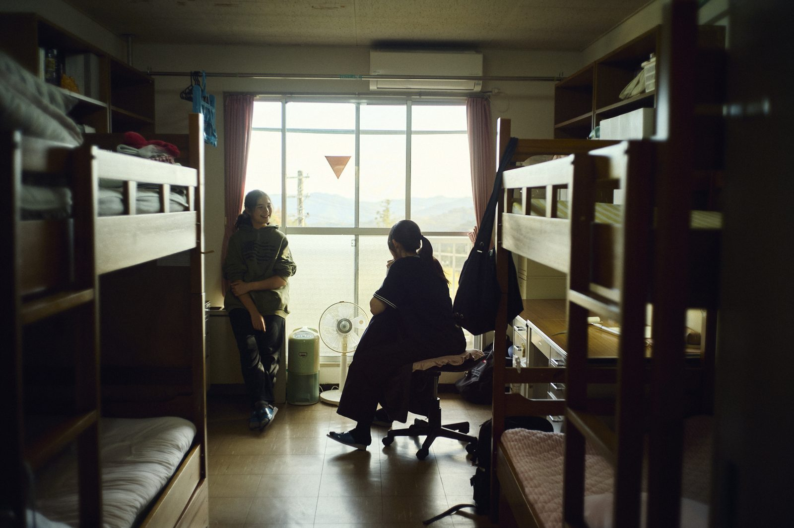
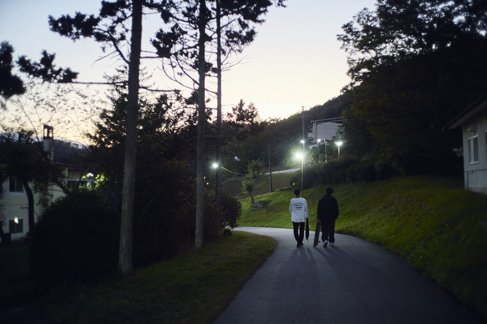
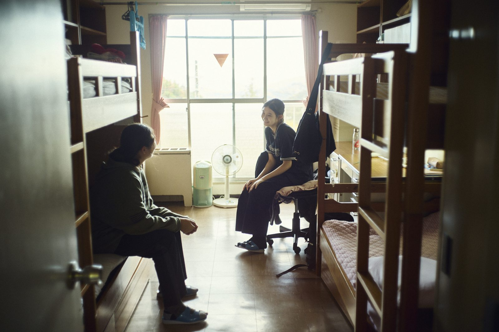
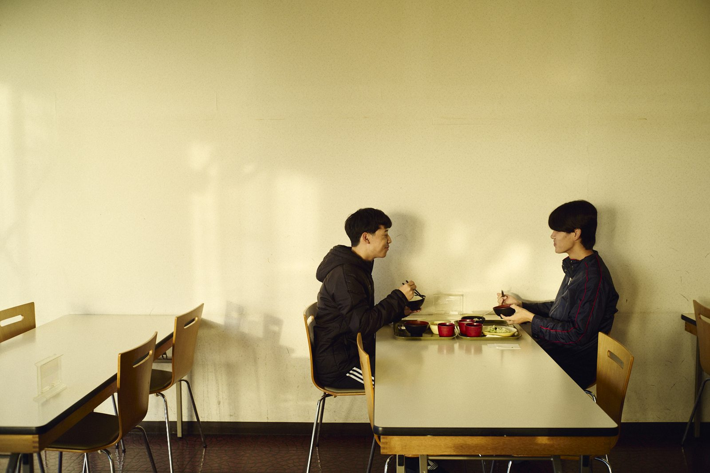
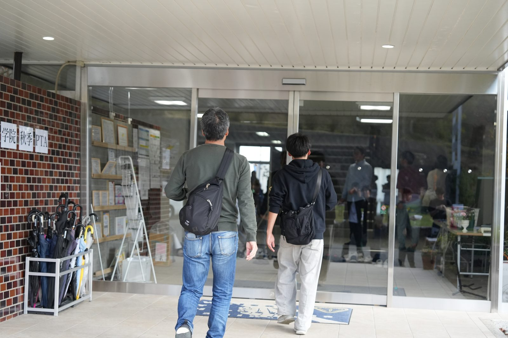
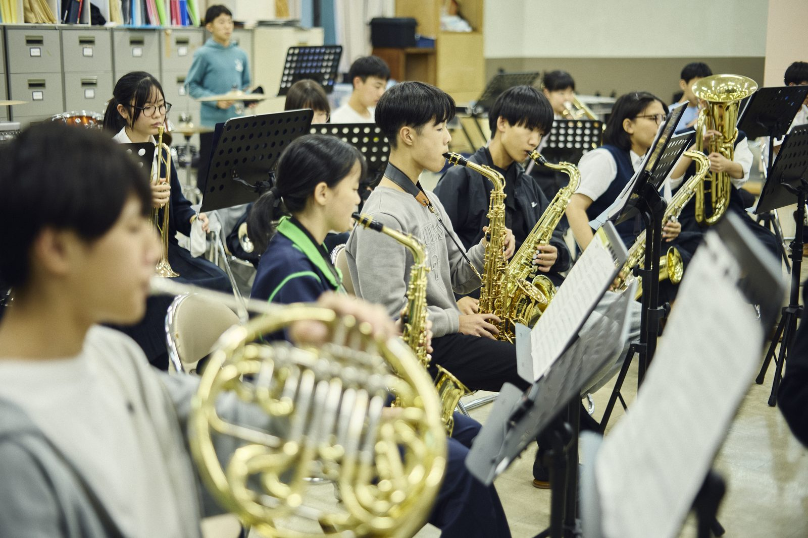
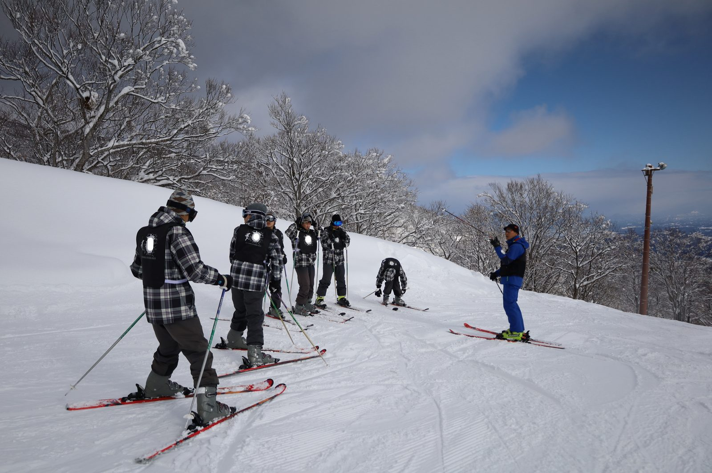
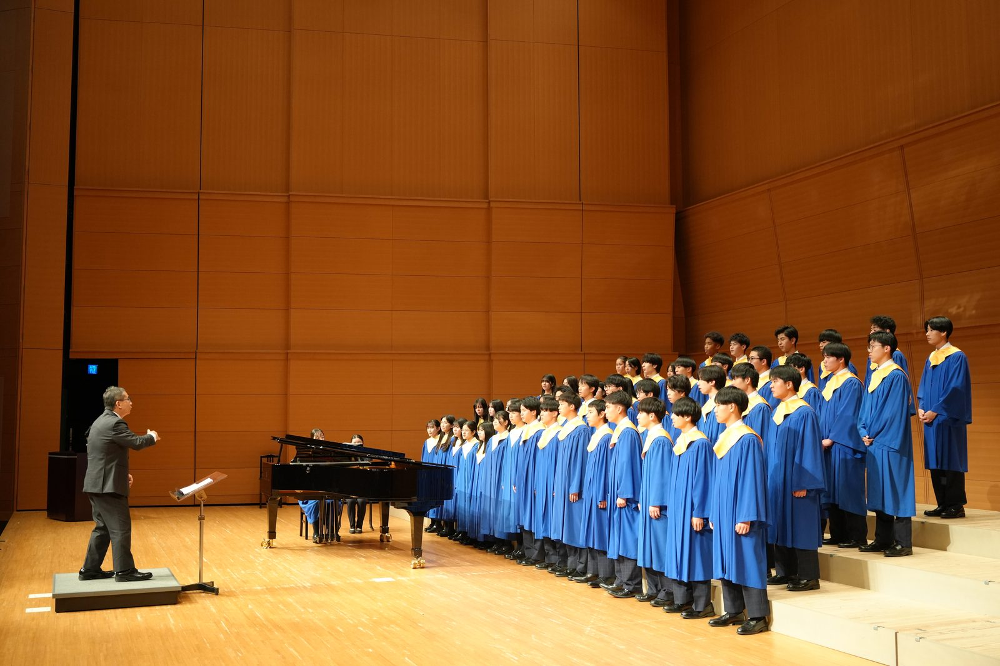

親元を離れて、誰かと暮らす。
LIVE ｜ 社会性・身体性生活そのものが、教育。育ってきた環境も価値観も違う仲間と部屋を共にし、ぶつかり、折り合いをつける毎日が、人をつくります。

寮教育を通して、キリストと出会い、品性を形成する。
三育の寮は、アドベンチスト教育をベースとした「教育寮」です。正解を教えるのではなく、共に未来を探す場所。転んだ時に助けてくれる仲間をつくることも、自立のひとつだと考えています。
帰る場所
心も体も休まる「家」。生徒も寮監も、第二の家族です。
学びの場
生活・コミュニケーション・マネジメントを、暮らしの中で身につけます。
つながり
一つ屋根の下で過ごした仲間は4,000人以上。卒業後も一生の仲間です。
寮の一日、一週間
平日
- 6:00
- 起床
- 6:15
- 朝の礼拝（寮）
- 6:30
- 朝食
- 8:30
- 授業
- 16:20
- 課外活動（曜日ごと・下表）
- 17:30
- 夕食
- 19:30
- 自習時間
- 21:30
- 就寝（中学）／高校は22:00
土曜日（安息日）
- AM
- 安息日学校・礼拝
- PM
- フリータイム・音楽活動など
日曜日
- 7:00
- 起床・朝食
- 8:15
- 登校・全校集会
- 8:55
- 授業
- 10:10
- 労作（高校）／作業（中学）
- PM
- 運動部・フリータイム

「みんな話しやすく、兄弟のように関われた。」
高1生徒放課後・週末の過ごし方
| 日 | 月 | 火 | 水 | 木 | 金 | 土 | |
|---|---|---|---|---|---|---|---|
| 中学 | 運動部 | 作業・シーズンスポーツ | 班農業 | 作業・運動部 | 文化部 | 作業 | 安息日プログラム |
| 高校 | ブラスバンド | 運動部 | 授業（8限まで） | 運動部 | 労作 |
※日曜日の午前中は中高ともに授業や作業・労作があり、授業日と設定しています。
金曜の夕方は、中高そろって日没礼拝・ベスパーで安息日を迎えます。
生徒がつくる寮
寮生全員で「寮会」をつくり、毎週月曜の夕礼拝後に寮生会議を開きます。役員は寮生の選挙で選び、3つの委員会が礼拝や行事を企画。中高合同の役員会議もあります。

寮の部屋
| 中学部 | 各寮1Fが中学部フロア。学年混合の3人部屋 |
|---|---|
| 高校女子 | スミルナ寮。異学年混合の2〜4人部屋 |
| 高校男子 | 同袍学寮。3人部屋、学年ごとのフロア |
いずれも年2回の部屋替えがあり、より多くの寮生と交わります。2023年に中高の寮を統合し、中学生と高校生が同じ寮で暮らします。
学ぶ時間、食と礼拝、暮らしのルール
学ぶ時間
- 自習 19:30–21:30
- 早朝学習 4:00–6:00
- 延灯学習 22:00–24:00（許可制）
試験前は時間を広げて対応します。

食と礼拝
食事は健康の原則に基づく菜食。毎食、食堂でみんなでいただきます。朝夕の礼拝が一日のリズム。金曜の夕方は日没礼拝とベスパーで安息日を迎えます。
暮らしのルール
- スマホ中学は持込不可。高校は許可制で、消灯前の25分間
- 連絡各寮に外線電話・寮携帯あり
- 荷物寮監が受け取り、発送も可
- 買い物キャンパス内ストア
1年の暮らしの流れ
高校は三学期制、中学校は二学期制（前期・後期）です。
| 月 | 主な行事 | 帰省 |
|---|---|---|
| 4月 | 入学式、修養会（中）、一泊旅行（中）、祈祷週 | |
| 5月 | 新入生歓迎会、中間休み | 中間休み（希望者） |
| 6月 | 保護者会、オープンキャンパス | 保護者会翌日（外泊可） |
| 7月 | サマーコンサート、夏祭り | |
| 8月 | 夏休み | 帰省 |
| 9月 | 祈祷週、ピクニック、体育祭、オープンキャンパス | |
| 10月 | ロードレース大会、中間休み | 中間休み（希望者） |
| 11月 | 保護者会、音楽発表会 | 保護者会翌日（外泊可） |
| 12月 | クリスマスコンサート、冬休み | 帰省 |
| 1月 | 高校卒業式 | |
| 2月 | 中高入試、修養会（高） | |
| 3月 | 中学校卒業式、春休み | 帰省 |
定期考査は省略しています。

6月・11月保護者会（PTA）
年に2回、週末に学校を開放し、全寮制で暮らし学ぶ生徒たちの様子をご覧いただく機会です。翌日は本校の指定休日となり、ご家族と外泊することもできます。

7月サマーコンサート
ブラスバンドが主催し、聖歌隊やハンドベルクワイアに加えて、生徒が自分たちでメンバーを集めた有志グループも出演します。

中3・4月／高2・2月修養会
中学3年生は4月に長崎を訪れ、平和学習を通して学びと仲間との結束を深めます。高校2年生は2月に、スキーを通した修養プログラムに取り組みます。

12月クリスマスコンサート
聖歌隊とハンドベルクワイアが全国各地の教会や商業施設を巡り、クリスマスの歌声と音色を届けます。
離れているからこそ、
毎日を届ける。
寮や学校での様子は、寮監や担任がつくる保護者との連絡グループで、写真付きで共有しています。離れて暮らすからこそ、学校での毎日をお伝えできる仕組みを整えています。
家に帰るタイミング
長期休暇
夏・冬・春休みは寮を閉め、全員が自宅へ。
中間休み
4泊5日。希望者のみ。
保護者会の翌日
本校の指定休日。ご家族と外泊できます。
読むだけでは、三育はわからない。
ひとつでも気になったら、一度キャンパスへ。見学も、宿泊体験も、相談だけでも大丈夫です。